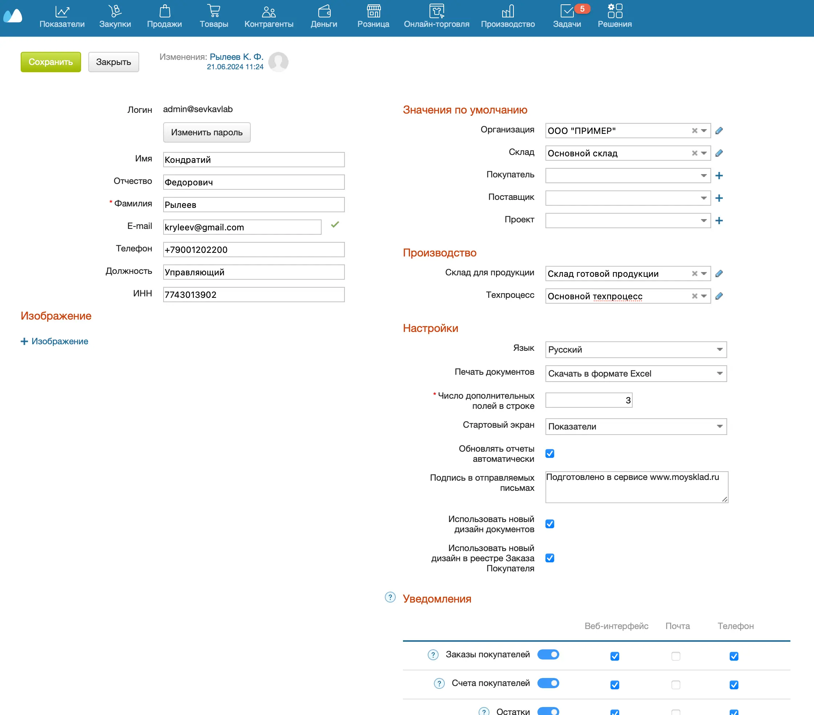
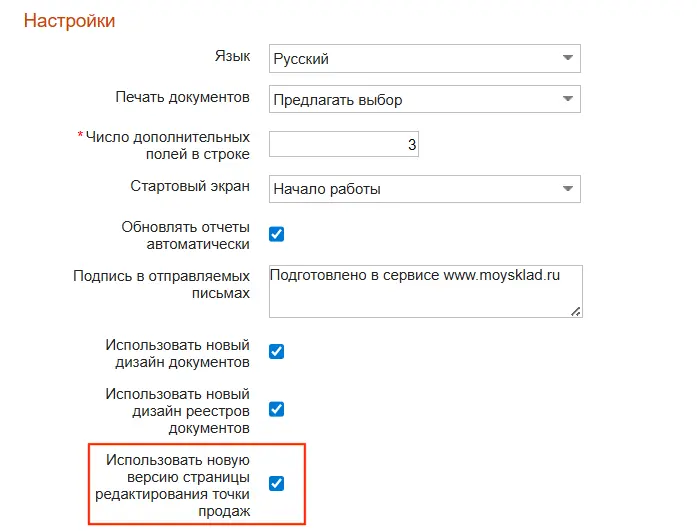

Вы можете изменить параметры текущей учетной записи (логина) на странице настроек пользователя. Для этого:
- Перейдите в раздел Меню пользователя → Настройки пользователя.
- Внесите изменения в настройки:
- внесите данные владельца аккаунта (ФИО, телефон, email, должность, ИНН);
- установите значения, которые будут автоматически подставляться в документы (организация, склады, покупатель, поставщик, проект). Эти параметры можно менять при создании документов;
- задайте настройки Производства: Склад для продукции и Техпроцесс по умолчанию;
- выберите язык интерфейса МоегоСклада (русский или английский);
- настройте формат печати документов (Excel, PDF, Open Office Calc);
- установите число пользовательских полей в строке;
- настройте стартовый экран;
- включите автоматическое обновление отчетов;
- настройте типы уведомлений о задачах;
- добавьте подпись, которая будет подставляться в отправляемые письма;
- включите добавление позиций в документ по одной кнопке.
- Нажмите на кнопку Сохранить вверху.

Для пользователей со страновой конфигурацией Узбекистан доступны настройки точки продаж в новом дизайне. Чтобы перейти на новый дизайн:
- Перейдите в раздел Меню пользователя → Настройки пользователя.
- Выберите Использовать новую версию страницы редактирования точки продаж.

- Нажмите на кнопку Сохранить вверху.